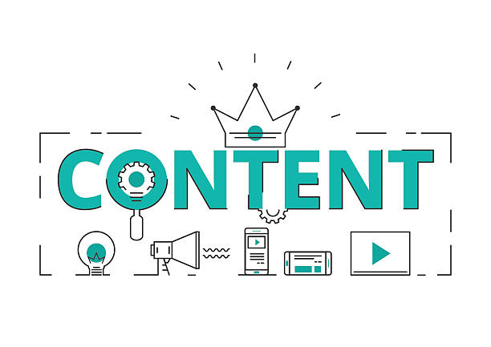

Digital Marketing is advertising your product/service to people digitally. You make use of the different types of digital marketing like email, pay-per-click, content, search engine optimization, affiliate, influencer, and social media marketing which is the safest way to advertise digitally right now. There is still Covid-19 out there, as much as we want to run our business with face-to-face interaction, it is not advisable. Social Media Marketing is the most effective and safest way for your business's growth. As you enter the online world and pursue social media marketing, you have to know the components and how it works. It is not just posting pictures and videos to promote your product or business. You have to be aware of the things you need to do to have successful marketing strategies with the help of social media platforms.
Content. Content is the most important component among the four. Having a good content catches more attention from your target audience. You need to have unique content compared to your competitors but still matches the things your audience want. It makes no sense if you have a good marketing strategy in promoting your business but it has bad content, it is just a waste of time. Be creative and know your audience more to come up with ideas that will get their attention to your business.

Listening & Engagement. Having an interaction with your audience is what makes up a good business reputation. For your business to be remembered by you customers, be interactive with them to keep them more engaged. As your business grows, your online presence also increases. Your audience will comment to your posts, share your posts, tag you in their social media posts, or message you directly. If you make a good reputation in the online world, other people will help you spread the word about your business. People might talk about your business without you even knowing. You don't only advertise your business to your audience but you keep them engaged, solve problems whenever there is, and get a help from the in spreading the good word about your business is up to.
Strategy. Determine which social media platforms you want to focus on as your marketing platform. You can choose from the major social media platforms like Facebook, Instagram Twitter, YouTube and LinkedIn. You also need to jot down all the goals you want your business to achieve. Define whether you want brand awareness, increase website traffic and sales, or generate engagement with your audience and your brand.
Analytics. Analytics is more on getting an in-depth analytics information about your marketing performance, engagement of your audience, and best time to post your advertisements. You can also use this to know more your audience and create contents based on their likes and interests. Analytics will help make progress in your marketing strategies and the contents that you make.
These four components makes up the power of social media marketing. You'll be able to successfully advertise your business in social media platforms with the help of these four components.